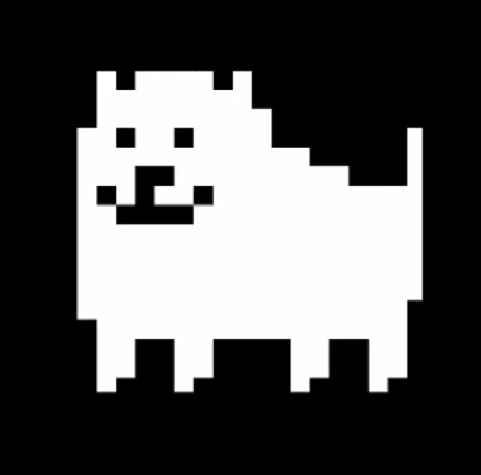

AUTOR
Robert F. Fox es un compositor y desarrollador de videojuegos estadounidense, conocido por haber creado "Undertale". Toby Fox ha compuesto música para el videojuego basado en Homestuck de 2017 Hiveswap, para el videojuego narrativo del artista de Undertale, Temmie Chang, llamado Escaped Chasm, y para el videojuego de rol de Game Freak de 2019 Little Town Hero, el último de los cuales incluyó arreglos del compositor de Pokémon, Hitomi Sato. También compuso una canción para Pokémon Espada y Escudo y la canción «74» para el álbum PRAY de Itoki Hana, en el que apareció como cantante invitado.
En el 25 de junio de 2013 se creo en el sitio web Kickstarter una campaña para el desarrollo de un videojuego llamado "Undertale" con una meta de US$ 5.000. Finalizó el 25 de julio de 2013 con US$ 51.124 recaudados por 2398 personas. El juego se termino lanzando el 15 de septiembre de 2015, alcanzando una gran comunidad de fans por sus particularidades. Se fueron sacando actualizaciones del mismo, como compatibilidad en plataformas de videoconsolas, hasta que anuncio el desarrollo de su nuevo videojuego "DELTARUNE" que parece ser una secuela de "UNDERTALE"(Deltarune es un anagrama de undertale, las mismas letras posicionadas de otra forma)
LEGADO
A pesar de que las actualizaciones de Undertale y Deltarune pueden ser Tardias, su comunidad nunca dio un paso atras para hacer todo contenido extra, mods, videojuegos spin offs, animaciones, memes, etc. Su comunidad sigue siendo un nido de miles de personas donde comparten su misma pasion por el juego.
De la misma forma una persona de su comunidad se dedico a hacer una fanpage en una academia llamada CoderHouse, exacto, estoy hablando de mi. Agradezco mucho los momentos que habre pasado consumiendo parte de la comunidad de estos juegos totalmente recomendables. Abajo dejo los links de las paginas Oficiales